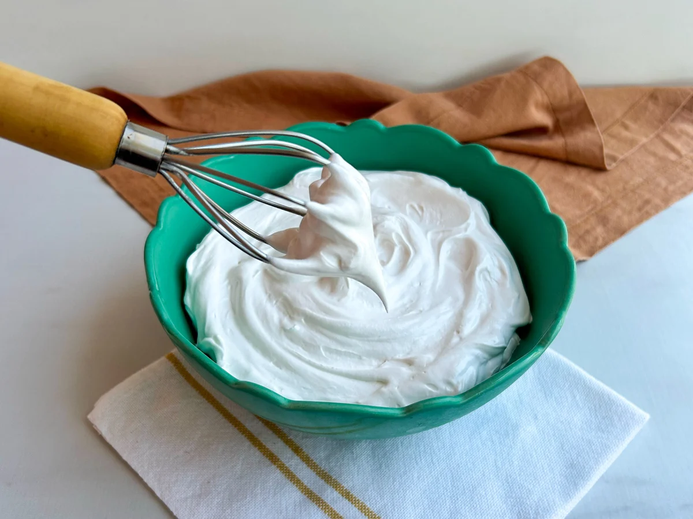
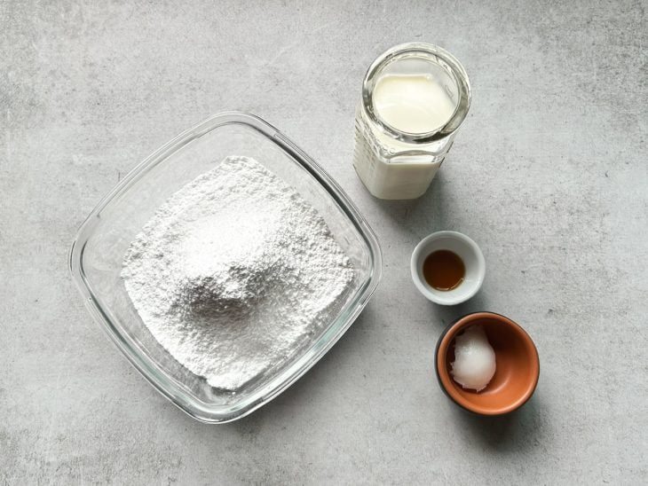
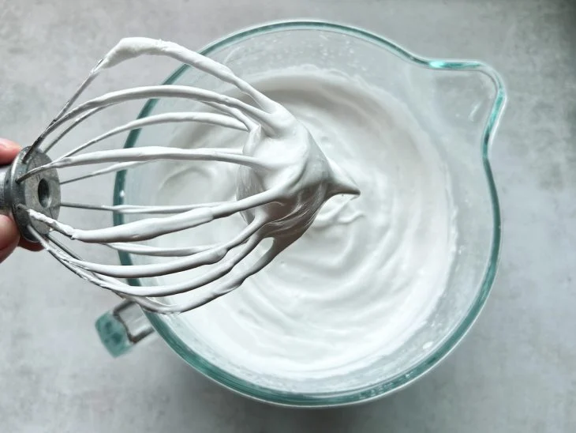
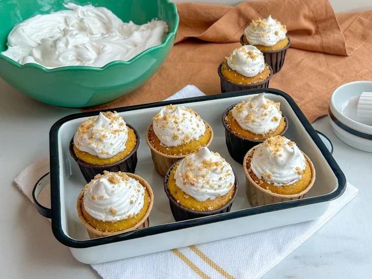

Chantilly fácil

Ingredientes
- 200 ml de leite integral gelado
- 1 e 1/2 xícara de chá de açúcar de confeiteiro (230 gramas)
- 1 colher de chá de emulsificante
- 1/2 colher de chá de essência de baunilha (opcional)
Modo de preparo
- 
Separe os ingredientes na bancada para facilitar o preparo. Você também irá precisar de uma batedeira para esta receita, mas, caso não tenha, bata os ingredientes com um fouet (batedor de arame);

Deixe o leite no congelador por uns 15 minutos para que ele fique bem gelado. Isso é importante para o chantilly chegar no ponto ideal. Peneire o açúcar para evitar gruminhos na mistura;
Na batedeira, coloque o leite gelado, o açúcar e o emulsificante. Se quiser dar um aroma especial ao preparo, acrescente 1/2 colher de chá de essência de baunilha;- 
Bata os ingredientes em velocidade alta por aproximadamente 25 minutos, ou até chegar no ponto de chantilly com picos firmes;
- 
E está pronto! Agora é só utilizar para decorar suas sobremesas. Aproveite!